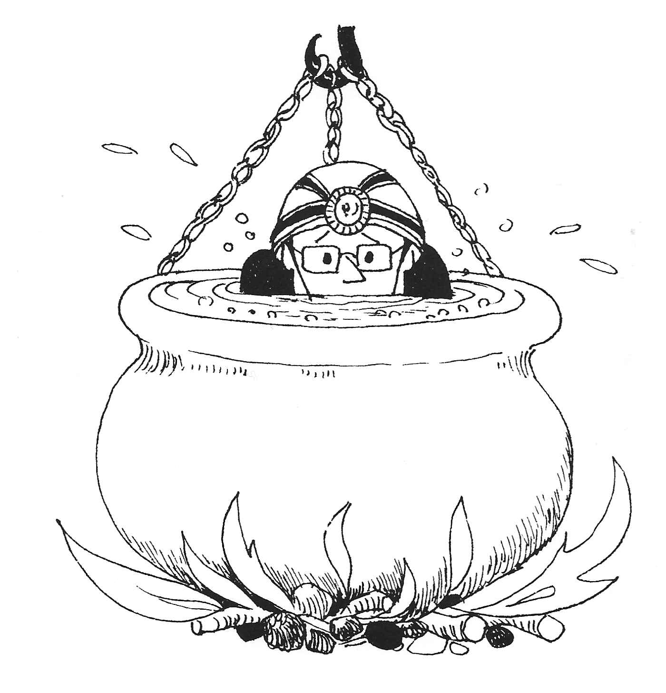

Table of Contents
One for the Pot
<p> <em>by Steve France</em> </p>
Caving as a Club activity, first got on the official meets list in winter 1983 84, though some members had “dabbled” some years before when Geoff Tryon had organised a beginners’ and an advanced trip.
The first “official” trip, to Carl’s Wark Cavern, was well attended despite heavy snow in Sheffield, causing one car to have an argument with a wall.
Conditions were wet underground and Steve Hartland led us through a short low section where the immersion of one ear was obligatory great fun! We were out in time to get changed chilly in the snow and go to the pub in Eyam for a lunch time pint all except Dunky who forgot his change of clothes and had to drive straight home, only to be refused entry to his parent’s house so legend has it until he had stripped off in the garage.
After this success, the following winter saw two meets on the list with trips to Giant’s and P8. Since then there has been at least one Club trip a year and a few members have got so keen that they have used the excuse of “going caving” to avoid nasty bog trots. However, there are still a few folks unconvinced of the attractions of caving and the excuses for not going on caving meets have ranged from “I’m frightened of lifts” through “I’ve been caving with you once that’s enough!” to “Not bloody likely!” Some even prefer to go to a nice, warm climbing wall, to do a twenty mile walk in the rain, or even to watch Ski Sunday in front of the box. But you cannot really beat a trip underground for sheer enjoyment, the peak of which is normally reached belatedly, whilst clutching a hot toddy in the bath at home.
The point of least enjoyment is reached shortly after leaving the cave and is characterised by the removal of wet, muddy clothing or wetsuits in rather less than comfortable temperatures and circumstances.
I can remember when Andy Smith during a particularly tight squeeze had to strip off down to his undies in order to get through. This was not the first time that Andy’s size had created problems, a classic example being his ascent of Cave Climb at Chatsworth Edge. The finish of the route is very similar to caving and involves clambering out of a closed chimney via a small hole at the top. With his legs flapping, Andy’s body was well and truly stuck fast until Charles came to the rescue by hoisting him out by his braces!
One of the most memorable Club trips for me was the January ‘86 visit to Swinsto Hole in the Yorkshire Dales. The small but elite ! team consisted of Marian Birkett, Dave Crowther, Mike Doyle, Dave Pendlebury and myself. It was a miserable wet day so we were cheered by the fact that we were not missing any climbing! Less cheering was the sight of flooded fields, with rivers and canals absolutely full to the brim what was that I had heard about the West Kingsdale master cave flooding to the roof? And the warning in the guidebook that the exit through Valley Entrance “sumps in wet weather”?
The plan was to abseil down all the seven or eight pitches of Swinsto, pulling the ropes down after us a trifle committing! However, some precautions for our safe delivery from the bottom were taken by Dave P and myself going into the Valley Entrance beforehand and fixing a ladder down into the master cave. I even went down it to see how much water there was in the bottom: instead of the normal three or four inches it was about two feet deep and moving at such a pace that walking upstream was virtually impossible. Still, not to worry, we would be coming downstream!
Back outside after fixing the ladder, we reassured the others that the water was lovely and warm and that only a small epic could be anticipated, then set off up the hill to Swinsto Hole.
The cave started off as it meant to go on wet! Straight into a low, tight, stream passage and quickly to the first pitch an abseil down a waterfall! Then 900 feet of stooping and hands and knees crawling in water, knee pads a definite advantage! A short waterfall descent into a pool was followed by a curtain pitch down another waterfall. It was interesting to watch the different techniques employed by people as they disappeared into the waterfalls in a welter of foam Dave P. used technique and control in an attempt to keep out of the water as much as possible while Dave C. employed speed as his defence against drowning. The problem was, the further down the cave we went, the greater the volume of water!
By the time we reached the main pitch two abseils, one of fifty feet and one of forty split by a ledge there was some real force in the water. I abseiled first here as on all pitches the privilege of being leader! and could not see the ledge at all until I actually touched it.
A sort of weird of disco was danced by the team to the music of crashing water in a sheltered recess at the foot of the main pitch, in an attempt to regain some of the heat lost from prolonged immersion. What we needed, obviously was an immersion heater? Groan, groan!
Everybody got warmed up again on the next section an exciting stream passageway with rapids to clamber down, pools to fall into and tight bits to squeeze through. Eventually we reached the final chamber after our eighth abseil. Not far to the master cave from here!
Off we went down the east entrance passage on our hands and knees, through a low watery bit and on to a gravel bank. All this I remembered from the last time I’d been here. What I did not recognise was the sump, where the roof of the passage gradually lowers to meet the water level. To cut a long story short, we went back and forth along a section of the cave before the correct route was finally located. Just enough uncertainty to get the adrenalin pounding!
Back in the master cave, the water was flowing down a veritable helter skelter channel. Mike and I leapt in and vanished down the cascades before the others realised where we had gone: I must take a rubber dinghy down there sometime, it would be great fun.
One thing I’ll never do again is to solo up a free hanging Electron ladder with a rucksack containing 150 feet of wet rope and several gallons of water!
Luckily the bit in the Valley Entrance that “in wet weather usually sumps” had not: there was at least six inches of air space!
Once outside, the fresh air was, as always, welcoming even though it was still raining. It was very satisfying to know that the walkers would undoubtedly have got wet too.

Figure 1: Castle Members in Giants Cave

Figure 2: One for the Pot